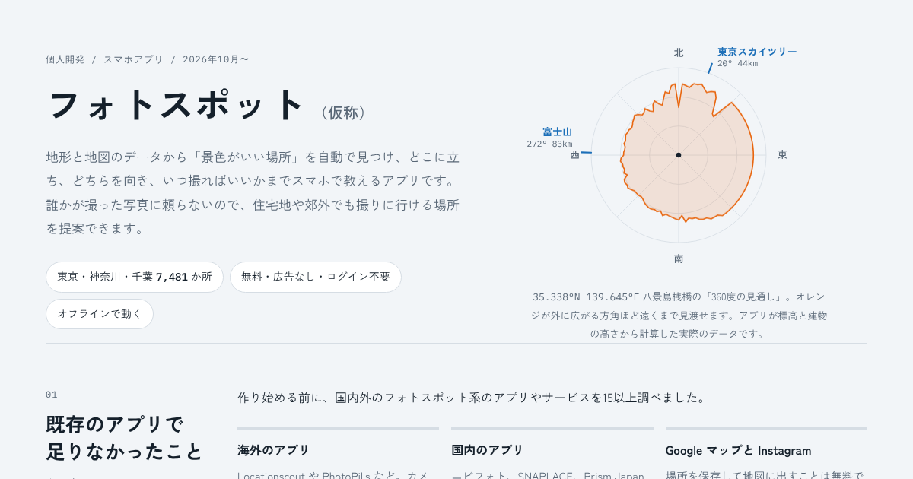
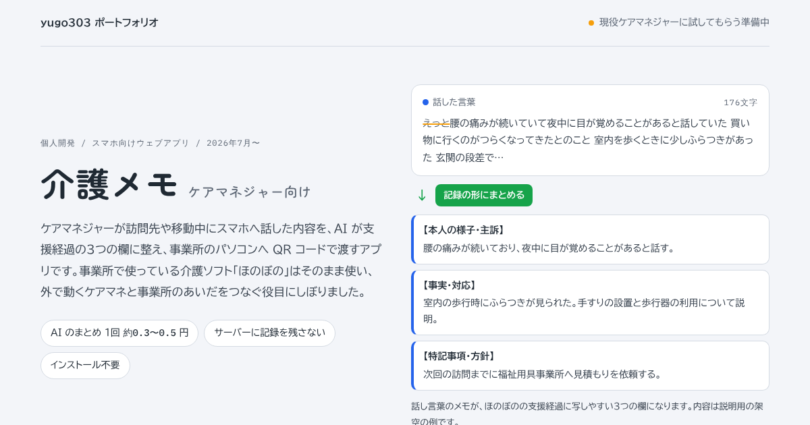
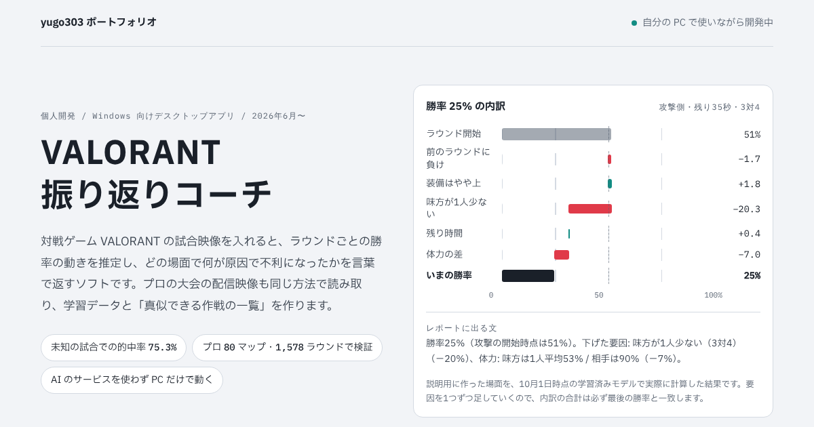

作ったものをまとめています。

地形と地図のデータから景色のいい場所を見つけ、スマホでの撮り方まで教える Android / iOS アプリ。
制作の記録を見る →
ケアマネジャーが訪問先でスマホに話した内容を AI が記録の形に整え、事業所のパソコンへ QR コードで渡すウェブアプリ。
制作の記録を見る →
VALORANT の試合映像から、ラウンドごとの勝率の動きと不利になった理由を言葉で返す Windows アプリ。プロの配信から作戦の一覧も作る。
制作の記録を見る →